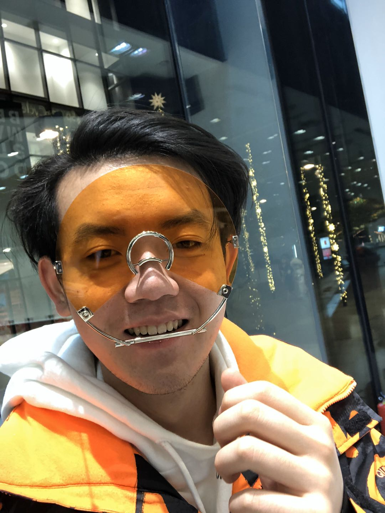
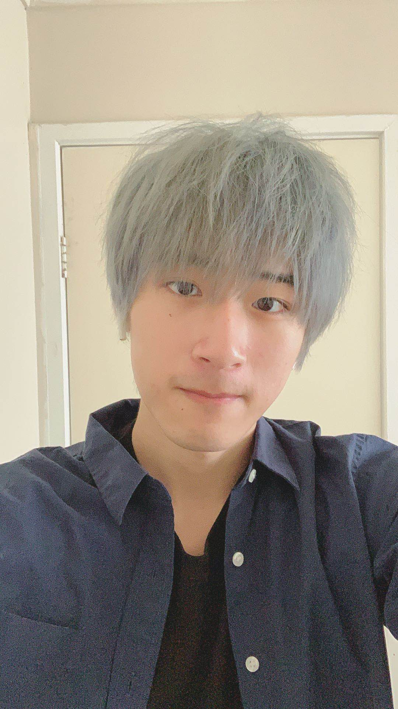

Project Name
ATM Sneakers App
Project Motivation
Group Members
[Yuliang Lei] [s3704446@student.rmit.edu.au]

[An IT major at RMIT who loves information technology, particularly in HTML&CSS]
[Interested in HTML/CSS/PHP, Database Management]
[Weaknesses in Java programming]
[I hope I can play a role in Web programming & Database Management]
[Qiheng Chen] [S3714084@student.rmit.edu.au]
[I am interest in IT because it's a technique most people don't have. The first time I've start learning IT was in year 5, my primary school conducted a Q-Basic course. But now I've graduated from RMIT diploma of IT my objective is learn about HTML. RMIT attract me because RMIT's facilities are among the most advanced in Australia]
[I'm interested in HTML and Python. As this project I'm planning to do some HTML coding and design features about this application]
[Java is the weaker point for me, but our team won't use Java until we finish our website]
[I'm a java developer in the project]
[Deyang Bao] [S3712374@student.rmit.edu.au]
[I currently study year 1 of information technology in RMIT now. I am kind of new in IT because I have no experience in IT before, but I still love it. Little skills but bunch of interest is the best way to describe me.]
I am good at get inspiration for project and user center design]
[My weaker point is creating a new design for website in this project, because I have less inspiration than other teammate]
[I want to be a supporter for other teammate with any part need help]
[Zhentao Ma] [s3866063@student.rmit.edu.au]
[This is my first semester at RMIT. I am very interested in IT, and I have learned a lot of knowledge about IT in the previous study.I'm good at database and Java]
[In this project I'm not good at the HTML and CSS part. I hope I can learn new knowledge with the joint efforts of the group]
[The Teamwork is very important. In this task, I was responsible for writing project description and features, which needed to be analyzed in combination with different things.]
[Haoming Tian] [s3814753@student.rmit.edu.au]
[Currently studying IT at RMIT, I've always been interested in IT and I have done some fundamental subjects during high school.]
[I'm interested into Java but I'm still very new at this programming language.]
[Time management and html are my biggest weaknesses and I hope I can overcome them over the course of this semester with the help from my team]
[I'm confident at doing documentations.]
[Zixun Zhou] [S3692845@student.rmit.edu.au]
[I am from China, Now studying IT major at rmit university, I like IT very much because I have been in touch with computers since I was very young. Although there is no high technology now, I still like IT.]
[I am very interested in Java, I am good at HTML and CSS, and some python. I like teamwork very much, I can do my homework and make friends.]
[I can use HTML and CSS to edit web pages, but I am not so proficient. In the process of doing homework, there are some places I need to learn while doing.]
[I want to be a website designer. And can do some paperwork.]